Hi, I'm Karel Nathanael Tanoe.
I'm a fifth-semester Computer Science undergraduate student at BINUS University majoring in Computer Science in the Intelligence Systems (AI) streaming, passionate about building technology that solves real-world problems.
Experienced in AI, web development, and UI/UX through university and self-initiated projects. I enjoy collaborating with others and connecting with new people.
Activities
Freshmen Leader 2026
Together with five fellow Freshmen Leaders, we led a group of new students through their orientation week at BINUS@Alam Sutera. My job was to keep them on track, keep them supported, and help a new campus feel like a place they belong.
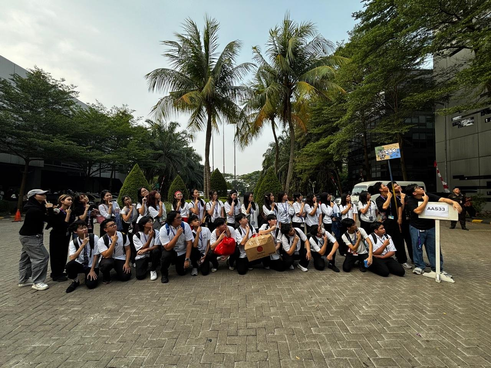
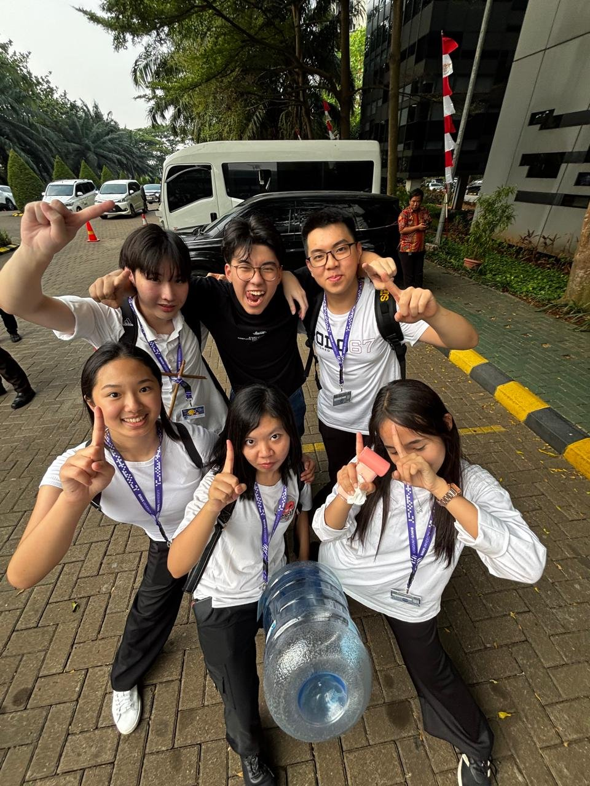
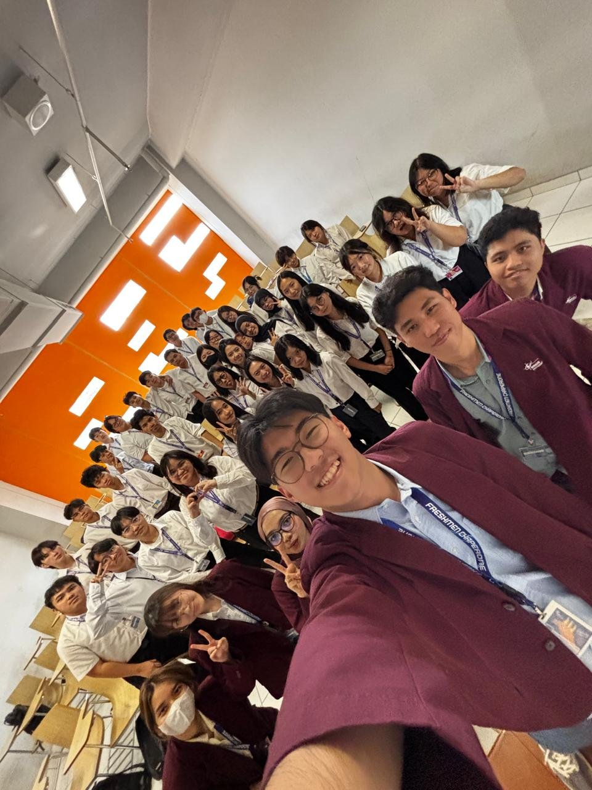
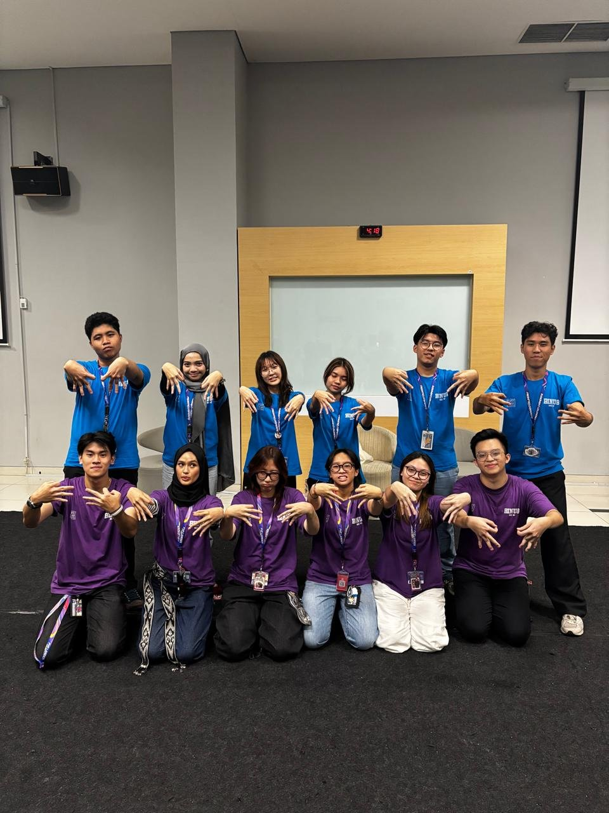
Teaching Children at an Orphanage About Dietary Guidelines and Nutritional Intake for a Healthy Life, Yayasan Sosial Tangan Kasih 2024
With six fellow classmates, we visited Yayasan Sosial Tangan Kasih to teach the children about dietary guidelines and the nutritional intake needed for a healthy life. We played games together to keep the lesson fun and easy to remember. We also brought nutritious food for the children, and taught them which foods are better for their bodies in the long run.
Because we were teaching about health, we wanted to be sure that everything we said was correct and valid. We contacted Dr. Yusack Yulian Andredharma and set up a Zoom meeting to interview him. Talking with him helped us understand and validate what a nutritious diet really is, so the information we shared with the children was reliable.
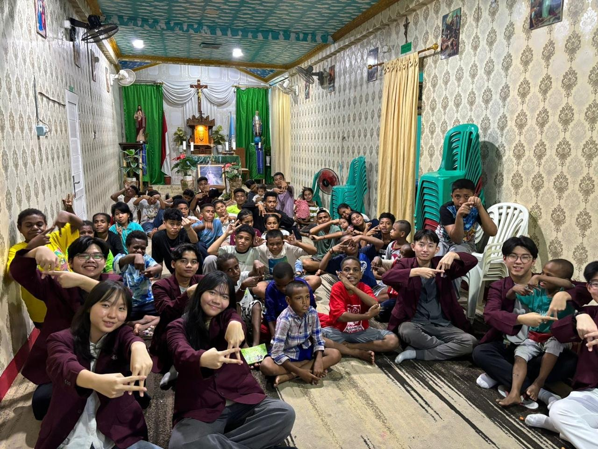
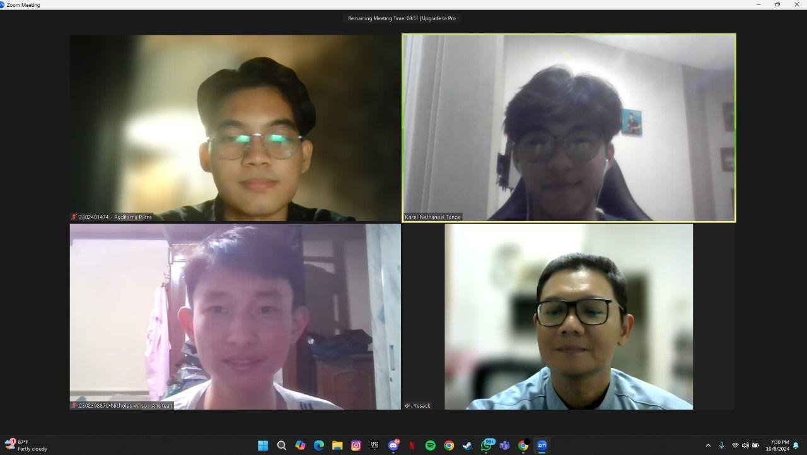
Projects
Collaboration Website: Collabra 2026
With two classmates, we built Collabra, a website for collaborative work. Its main idea is that a person's role belongs to the project, not to the account. The same user can be a team member in one project and the project manager in another.
This website does not only excel at separating roles, Collabra also allows each account to have more than one project, have their own progress bar, can track each task for each individual project and more.
Behind this, every project stores its own list of members and their roles. Whoever creates a project becomes its project manager, and others join as team members, either by entering the project's invite code or by being added by the manager. Inside a project, tasks have a status, a deadline and an assignee, and can be viewed on a Kanban board. Team members can update their task progress, leave comments on tasks and attach files, while the project manager can edit the project details, manage the team and mark the project as finished.
Collabra also has a dashboard, a project list that can be filtered by status (all, active, completed and archived), profile settings, and a light and dark mode. On the technical side, the frontend is built with HTML, CSS and JavaScript, and the backend uses FastAPI with a PostgreSQL database, secure login with hashed passwords and tokens, and Docker for running it. Before building, we also prepared a Software Requirements Specification (SRS) document and a Figma design for the interface.
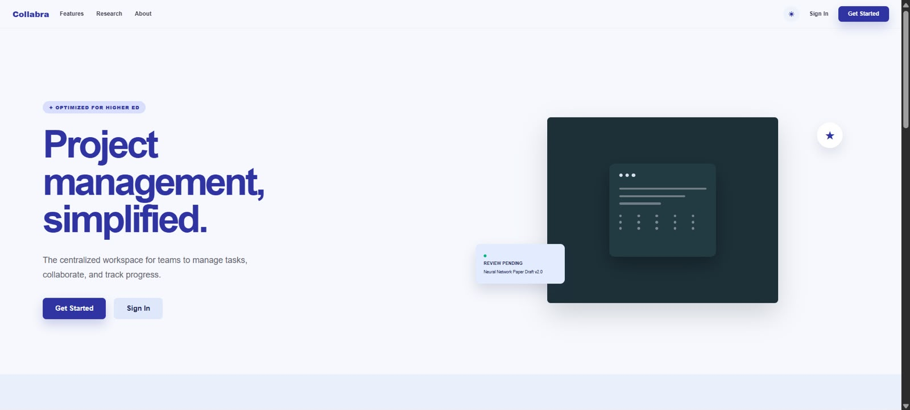
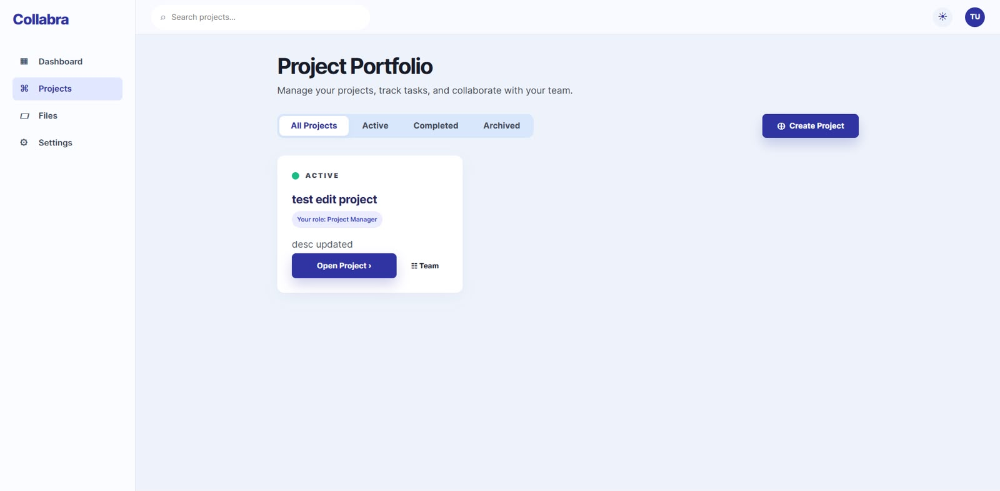
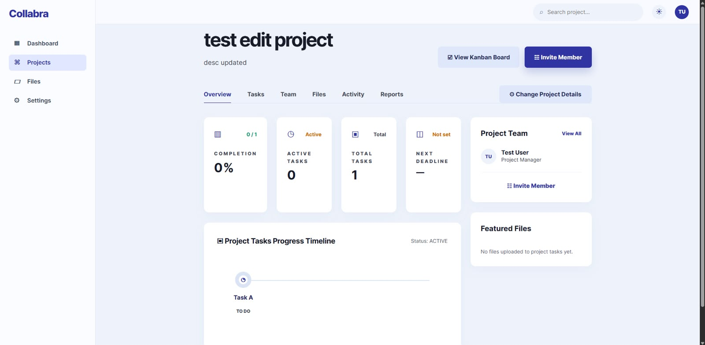
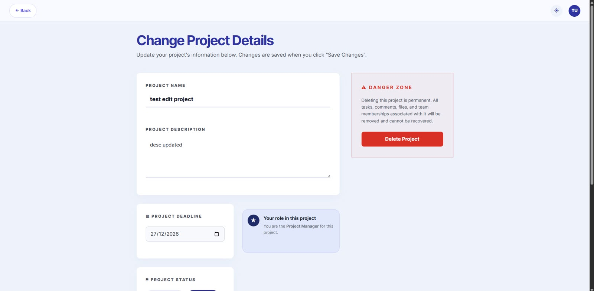
Bank Fraud Detection System: BankGuard 2026
With three fellow classmates, we built BankGuard, a machine learning-based mobile banking fraud detection system using Random Forest. A user enters the details of a transaction, such as its type, the amount, and the balance before and after, and BankGuard analyzes whether the transaction looks safe or suspicious.
The Random Forest model was trained on a dataset of more than 1.7 million transactions. Instead of looking only at the raw numbers, we engineered features such as the ratio of the amount to the account balance, whether the balances add up correctly after the transaction, and each user's recent spending pattern, using rolling averages and deviations over their last 6, 12 and 24 transactions.
Behind the interface, a Flask backend with a MongoDB database handles registration, login and fraud checks. When a new user signs up, they enter their usual minimum and maximum transaction amounts, and the system creates a baseline of 30 normal transactions so the model has a history to compare against. Every checked transaction is saved with its prediction. The result page then shows whether fraud was detected, along with a risk score, a confidence level and a pattern match.
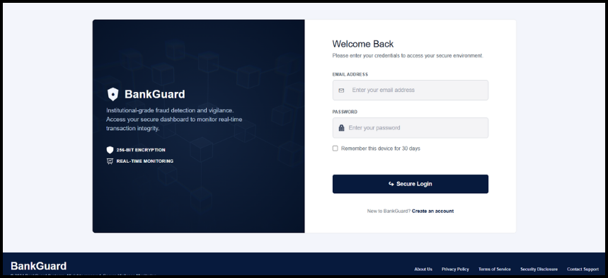
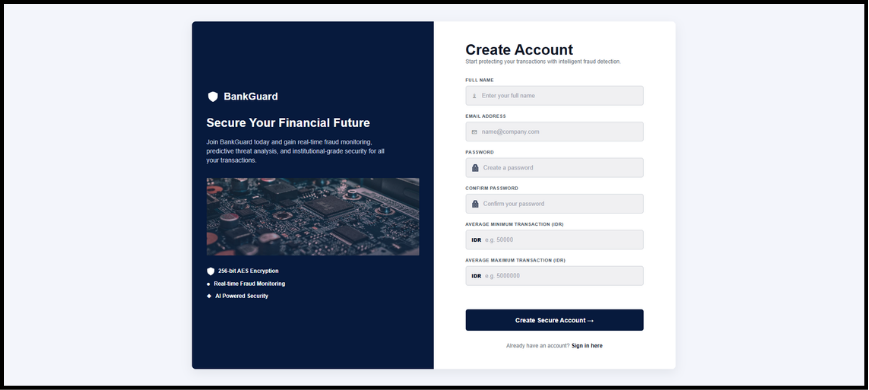
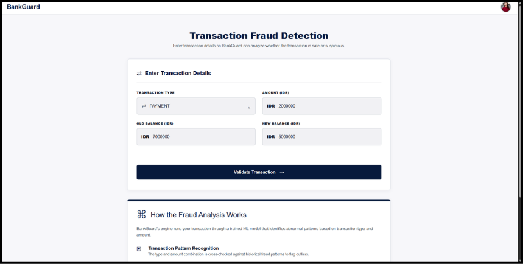
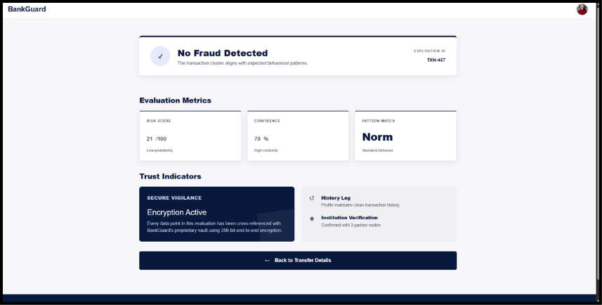
Research
Comparative Analysis of LSTM and XGBoost for Short-Term Energy Consumption Forecasting in Smart Buildings Paper 2026
Together with a friend, we submitted a paper comparing the performance of LSTM and XGBoost for short-term energy consumption forecasting in smart buildings. Our goal was to find out which of the two is better at discerning patterns in time-based data. LSTM is usually considered the better choice and tends to dominate time-based tasks, while XGBoost is often left behind.
The results turned out differently than expected. When both models were given raw data, LSTM performed better. But when XGBoost was supplied with domain-specific temporal feature engineering, it became competitive with LSTM and came out ahead. In other words, XGBoost is competitive only when it is given that kind of feature engineering.
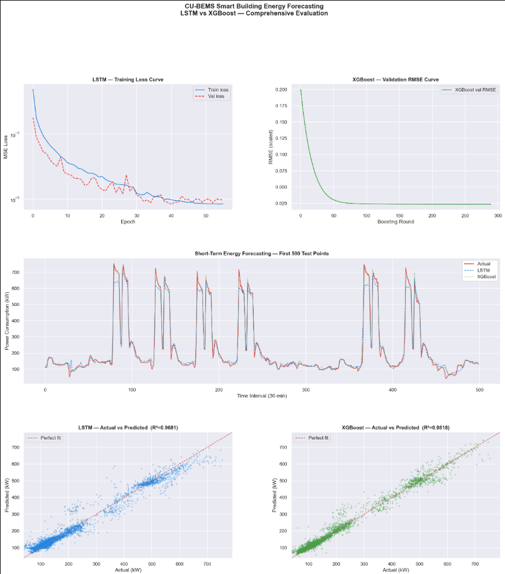
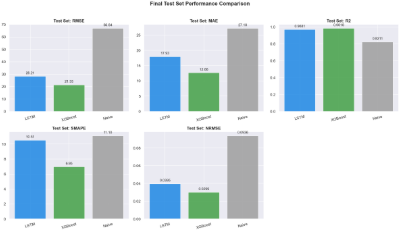
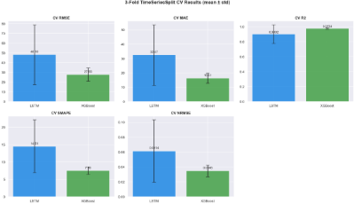
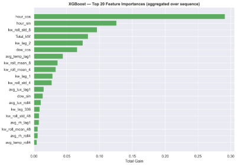
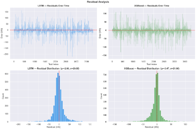
Freshmen Leader 2026
Together with five fellow Freshmen Leaders, we led a group of new students through their orientation week at BINUS@Alam Sutera. My job was to keep them on track, keep them supported, and help a new campus feel like a place they belong.
What I did
- Led and guided a group of freshmen through every day of orientation week.
- Tracked each student's orientation assignments and reminded them of deadlines.
- Helped freshmen adapt to campus, from finding their way around to meeting new friends.
- Coordinated with the other five leaders so every group got the same clear information.
Why it mattered
The first week at university can feel overwhelming. New students face a new place, new people and a lot of tasks at once. By checking in with them, answering questions and staying organised, we made that week easier and more welcoming.
The role taught me how to lead by listening, how to stay reliable under pressure, and how to work as one team with other leaders toward a shared goal.
Photos
Collaboration Website: Collabra 2026
With two classmates, we built Collabra, a website for collaborative work. Its main idea is that a person's role belongs to the project, not to the account. The same user can be a team member in one project and the project manager in another.
This website does not only excel at separating roles, Collabra also allows each account to have more than one project, have their own progress bar, can track each task for each individual project and more.
Behind this, every project stores its own list of members and their roles. Whoever creates a project becomes its project manager, and others join as team members, either by entering the project's invite code or by being added by the manager. Inside a project, tasks have a status, a deadline and an assignee, and can be viewed on a Kanban board. Team members can update their task progress, leave comments on tasks and attach files, while the project manager can edit the project details, manage the team and mark the project as finished.
Collabra also has a dashboard, a project list that can be filtered by status (all, active, completed and archived), profile settings, and a light and dark mode. On the technical side, the frontend is built with HTML, CSS and JavaScript, and the backend uses FastAPI with a PostgreSQL database, secure login with hashed passwords and tokens, and Docker for running it. Before building, we also prepared a Software Requirements Specification (SRS) document and a Figma design for the interface.
What Collabra does
- Roles per project. Users are assigned a role inside each project, so one account can hold different roles in different places.
- Progress tracking. Teams can see how far a project has come and what is still left to do.
- Project deadlines. Each project has its own deadlines, so everyone knows what is due and when.
- And more. Extra features that keep teamwork organised in one place.
The idea behind it
Many tools give each account one fixed role, which does not match real life. A student might lead one group project and be a regular contributor in another. Collabra was designed around that reality.
Working in a team of three, we planned the features together, split the work and put the pieces together into one website. It taught me how to collaborate on a shared build, communicate clearly and keep a project moving toward a deadline.